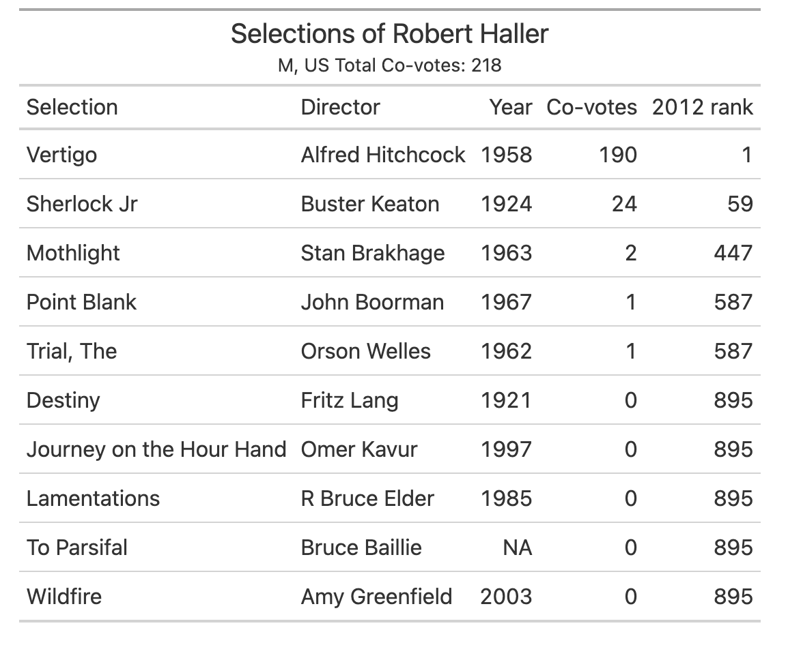

The Sight and Sound 2012 Poll Dataset
On December 1, Sight and Sound published the rollup of its 2022 100 Best Movies of All Time, and the reaction has calmed since then. The results are entertaining, the ballot counting process not so much. We know that the new Critics Poll best movie of all time is the Belgian 1975 film Jeanne Dielman etc. etc. We don’t yet know if the result represents a groundswell of support from new voters.
But we do have all of the ballots from the 2012 poll, and Sight and Sound says the individual ballots will be available online in January. The poll is a wonder because of individual ballots. Sight and Sound reveals as much in their T* feed which previews some selected ballots. The meaning of the aggregated lists is hard to interpret, but the variety of the individual lists spreads over every imaginable taste and movie pedagogy. You don’t just get different opinions. You get every strategy and level of engagement in a survey like this one, spurred by the poll’s reputation and its infrequency.
So how does it work? In 2012, Sight and Sound received returned ballots from 846 respondents to the critics poll, and 359 in its separate directors poll. One could combine them, but the critics poll receives the most attention.
Respondents are asked only to list ten movies, unranked. They can list any movie, a power that is freely exercised. The survey results simply count the occurrence of each movie on individual ballots. That’s it. The count is published alongside the ballots, though we haven’t seen the counts online.
What do individuals imagine a “greatest movie” signifies? Maybe something other than a “favorite”, maybe leaning toward ideas about importance or contribution to cinema as an art form. Maybe its a strategic spin on the post-poll buzz, or maybe an individual statement about unheralded movies that becomes public, since its not a secret ballot. Maybe its an endorsement of a type of movie, or a type of movie canon, that could be old or new.
Leave aside the Some people in the world care about preference aggregation, and if the Sight and Sound poll was worth the bother, they would have questions. Should we weight each movie equally on an individual ballot? Should every respondent be weighted equally? Should the choice set somehow be constrained by reputability? Why, in 2012, did Martin Scorsese and Quentin Tarantino get to list 12 movies instead of just 10?
The survey doesn’t need this kind of complexity. It only demands that we relax when the list shuffles around a bit, as it did from 2012 to 2022. As I have pointed out elsewhere, before we sweat the rise of Jeanne Dielman on the survey, we need to remember a few things about the 2012 surveys:
The critics poll included 846 ballots, that chose 2019 individual movies. In a sense, we get 8460[] selections, spread over 2019 movies.
Of those 2019 films, 1125 of them were chosen by exactly one person.
The #1 film in 2012 was Vertigo because no other film exceed its 191 votes. Out of 846 ballots cast. That’s 22.6% that included Vertigo in the top ten. This means 77.4% of the ballot couldn’t find a place for the #1 movie in the top 10.
Consider this list from archivist Robert Haller in the 2012 critics poll who chose Vertigo and five other films chosen by nobody else:

A co-vote is the number of other ballots that contain the particular movie. We know that a voter for Vertigo has 190 co-votes, but notice the five films at the bottom. All great, all important, but only appearing once for a single voter.
This kind of table is a simplified version of network analysis, and when the 2022 data appears, we should learn how voters combine films, and how certain ballots and certain voters form clusters. For now, I can look at Mr. Heller’s list and see all kinds of movies that provoke my interest.